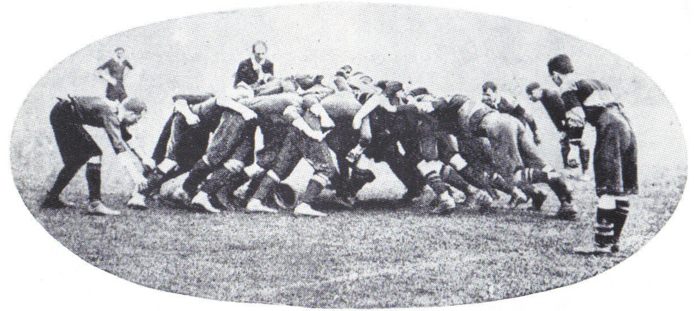
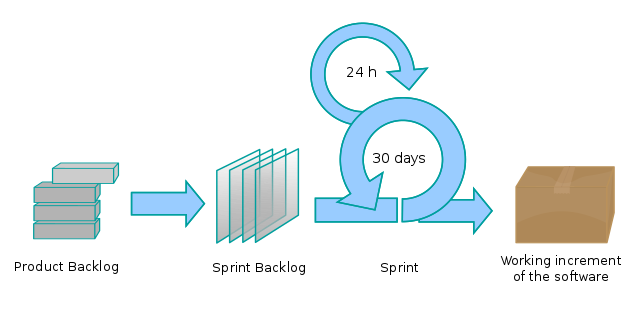

Скрам
Скрам (англ. Scrum) — підхід управління проєктами для гнучкої розробки програмного забезпечення. Скрам чітко робить акцент на якісному контролі процесу розробки.
Історія
Підхід вперше описали Гіротака Такеучі та Ікуджіро Нонака[1] в статті The New New Product Development Game (Гарвардський Діловий Огляд[2], січ-лют 1986). Вони відзначили, що проєкти, над якими працюють невеликі, крос-функціональні команди, зазвичай систематично продукують кращі результати, і пояснили це, як «підхід регбі». У 1991 році ДеҐрейс та Шталь у книжці Злі проблеми, справедливі рішення[3] послалися на цей підхід, як на Scrum (штовханина; сутичка навколо м'яча (у регбі)), спортивний термін, згаданий в статті Такеучі і Нонака. Кен Швабер на початку 1990-х використовував підхід, який привів Scrum в його компанію. Вперше метод Scrum було представлено на загальний огляд задокументованим, чітко сформульованим та описаним спільно Сазерлендом[en] та Швабером на OOPSLA'96 в Остіні. Швабер та Сазерленд протягом наступних років працювали разом щоб обробити та описати весь їхній досвід та найкращі практичні зразки для індустрії в одне ціле, в ту методологію, що відома сьогодні як Scrum. Швабер об'єднав зусилля з Майком Бідлом[4] в 2001, щоб детально описати метод в книжці Agile Software Development with SCRUM. Незважаючи на те, що для Scrum нарекли долю управління проєктами з розробки ПЗ, він може також використовуватися в роботі команд обслуговувань програмного забезпечення (software maintenance teams), або як підхід управління розробкою і супроводом програм: Scrum of Scrums.
Визначення
Scrum — це кістяк псуроце, який включає набір методів і попередньо визначених ролей. Головні дійові особи — ScrumMaster, той хто опікується процесами, веде їх і працює як керівник проєкту, Власник Продукту, людина, що представляє інтереси кінцевих користувачів та інших зацікавлених в продукті сторін, та Команду, яка включає розробників. Протягом кожного спринту[5], 15-30 денного періоду (тривалість визначається командою), працівники створюють функціональний ріст програмного забезпечення. Набір можливостей, які імплементуються кожного спринту, приходять з етапу, що має назву product backlog (документація запитів на виконання робіт), який має найвищу пріоритетність за рівнем вимог до роботи, що повинна бути виконана. Запити на виконання робіт (backlog items), що визначені протягом наради з планування спринту (sprint planning meeting), переміщуються в етап спринту. Протягом цієї наради Власник Продукту інформує про завдання, які він хоче, аби були виконані. Тоді Команда визначає, скільки з бажаного вони можуть зробити, щоб завершити необхідні частини протягом наступного спринту[6]. Протягом спринту команда виконує визначений фіксований список завдань (т.з. backlog items). Впродовж цього періоду ніхто не має права змінювати перелік запитів на виконання робіт, що слід розуміти, як заморожування вимог (requirements) протягом спринту.
Ролі (дійові особи)
За методикою Scrum у виробничому процесі є визначені ролі, що розбиті на дві групи — «свиней» та «курей». Ці назви використані через жарт про свиню та курку[6]. Свиня та курка йшли собі дорогою. Курка подивилася на свиню, й каже «А відкриймо ресторан!» Свиня подивилася на курку, й відповідає «Добра думка, а що ми будемо подавати на стіл?» Курка подумала, й каже: «Чому б не подавати яєчню зі шкварками?». «Я не згодна», відповідає свиня, «тоді я буду повністю віддана цій справі (досл. повністю приготована, англ. committed), а ти — лише залучена до неї (англ. involved).» Отже, свині використовуються для побудови продукту регулярно і часто (повністю задіяні), тоді як будь-які інші — кури, ті, що зацікавлені (і задіяні) в проєкті, але не мають прямого стосунку до приготування страви. Потреби, бажання, ідеї та вплив курей беруться до уваги, але їм не завжди дозволяють прямо впливати, видозмінювати або включатися в хід Scrum проєкту.
«Свині»
Свині повністю задіяні в проєкті, у скрам-процесі, так би мовити вони єдині з «власним беконом» на виробничій лінії
- Власник Продукту (Product Owner)
Власник Продукту представляє зацікавлені сторони та є голосом клієнта. Він є відповідальним за забезпечення того що команда додає цінність до бізнесу.
- Керівник (ScrumMaster)
Методологія Scrum застосовується за сприяння Scrum-керівника, який є відповідальним за спроможність команди виконати поставлені цілі і вирішення складнощів, які виникають.
- Команда розробників (Scrum Team)
Команда розробників є відповідальною за доставку потенційно готових частин продукту в кінці кожного спринту (the sprint goal). Команда складається з 3-9 людей що виконують роботу (аналізують, виконують дизайн, пишуть код, тестують, готують документацію і таке інше). У Scrum, команда є самокерованою.
«Кури»
- Користувачі (Users)
- Клієнти, Продавці (Stakeholders)
- Експерти-консультанти (Consulting Experts)
Артефакти
Product backlog (беклог)
Product backlog — це документ, який має список вимог до функціональності, які упорядковані згідно зі ступенем важливості. Product backlog представляє список того, що повинно бути реалізовано. Елементи цього списку називаються «історіями» (user story) або елементами backlog-у (backlog items). Product backlog відкритий для редагування усім учасникам Scrum-процесу.
Обов'язкові поля
- ID — унікальний ідентифікатор, порядковий номер, який використовується для ідентифікації історій у разі їх перейменування.
- Назва (Name) — стислий опис історії. Він повинен бути однозначним, щоб і розробники і product owner могли зрозуміти, про що йдеться і відрізнити одну історію від іншої.
- Важливість (Importance) — ступінь важливості даної історії на погляд product owner ’a. Зазвичай являє собою натуральне число, іноді для цієї цілі використовуються числа Фібоначчі. Чим більше значення, тим вищий пріоритет.
- Попередня оцінка (initial estimate) — початкова оцінка об'єму робіт, необхідних для реалізації історії порівняно з іншими історіями. Вимірюється у story point'ах. Приблизно відповідає числу «ідеальних людино-днів».
- Як продемонструвати (how to demo) — стисле пояснення того, як завершена задача буде продемонстрована у кінці спринта. Дане поле може являти собою код автоматизованого приймального тесту.
Додаткові поля
Іноді, також, використовуються додаткові поля у product backlog, в основному для того, щоб допомогти product owner'у визначитися з його пріоритетами.
- Категорія (track). Наприклад, «панель управління» чи «оптимізація». За допомогою цього поля product owner може легко вибрати усі пункти категорії «оптимізація» і задати їм низький пріоритет.
- Компоненти (components) — указує, які компоненти (наприклад, база даних, сервер, клієнт) будуть зачеплені при реалізації історії. Дане поле складається з групи checkbox'ів, які відмічаються, якщо відповідні компоненти потребують змін.
- Ініціатор запиту (requestor). Product owner може захотіти зберігати інформацію про усіх замовників, зацікавлених у даній задачі. Це потрібно для того, щоб тримати їх у курсі діла про хід виконання робіт.
- ID у системі обліку помилок (bug tracking ID) — якщо ви використовуєте окрему систему обліку помилок, тоді у описі історії корисно зберігати посилання на всі дефекти, які до неї відносяться.
Sprint backlog
Sprint backlog — містить функціональність, обрану Product Owner із Product Backlog. Всі функції розбиті по задачах, кожна з яких оцінюється командою. Кожен день команда оцінює об'єм роботи, який необхідно провести для завершення задачі.
Burndown chart
Burndown chart — показує, скільки вже виконано і скільки ще залишається зробити.
Розширення
Критерії готовності (Definition of ready, DoR) — критерії готовності задачі до того, щоб взяти її у роботу.
Критерії повної готовності (Definition of Done, DoD) — критерії повної готовності задачі.
Критерії прийнятності (Acceptance Criteria, AC) — критерії того, що задача не тільки повністю готова, але й в результаті працює як потрібно.
Церемонії (зустрічі)
Планування спринта (Sprint Planning Meeting)
Проходить на початку нової ітерації Спринта.
- Із Product Backlog обираються задачі, зобов'язання по виконанню яких за спринт бере на себе команда;
- На основі обраних задач створюється Sprint Backlog. Кожна задача оцінюється у ідеальних людино-годинах;
- Розв'язання задачі не повинне займати більше 12 годин або одного дня. За необхідності задачу розбивають на підзадачі;
- Обговорюється та визначається, яким чином буде реалізовано цей об'єм робіт;
-
Тривалість наради обмежена зверху 4-8 годинами в залежності від тривалості ітерації, досвіду команди тощо
- (перша частина наради) Беруть участь Product Owner + Команда: обирають задачі із Product Backlog;
- (друга частина наради) Бере участь лише команда: обговорюють технічні деталі реалізації, наповнюють Sprint Backlog
Щоденна нарада (Daily Scrum Meeting)
Відбувається кожен день протягом спринта. Є «пульсом» ходу спринта. Нараді властиві наступні обмеження:
- починається точно вчасно;
- всі можуть спостерігати, але говорять тільки «свині»;
- триває не більш ніж 15 хвилин;
- проводиться в одному і тому ж місці протягом одного спринта.
Протягом наради кожен член команди відповідає на 3 запитання:
- Що зроблено з моменту попередньої щоденної наради?
- Що буде зроблено з моменту поточної наради до наступної?
- Які проблеми заважають досягненню цілей спринта? (Над рішенням цих проблем працює ScrumMaster. Зазвичай це рішення проходить за рамками щоденної наради і у складі осіб, що безпосередньо займаються даною перешкодою.)
Демонстрація (Sprint Review Meeting)
- Проходить у кінці ітерації (спринта).
- Команда демонструє внесок функціональності до продукту всім зацікавленим особам.
- Залучається максимальна кількість глядачів.
- Усі члени команди беруть участь у демонстрації (одна людина на демонстрацію або кожен показує, що зробив за спринт).
- Обмежена 4-ма годинами в залежності від тривалості ітерації і змін у продукті.
Ретроспектива (Sprint Retrospective)
- Члени команди висловлюють свою думку про минулий спринт.
- Відповідають на два основних запитання:
- Що було зроблено добре у минулому спринті?
- Що потрібно покращити в наступному?
- Виконують покращення процесу розробки (вирішують питання та фіксують вдалі рішення).
- Обмежена 1-3ма годинами.